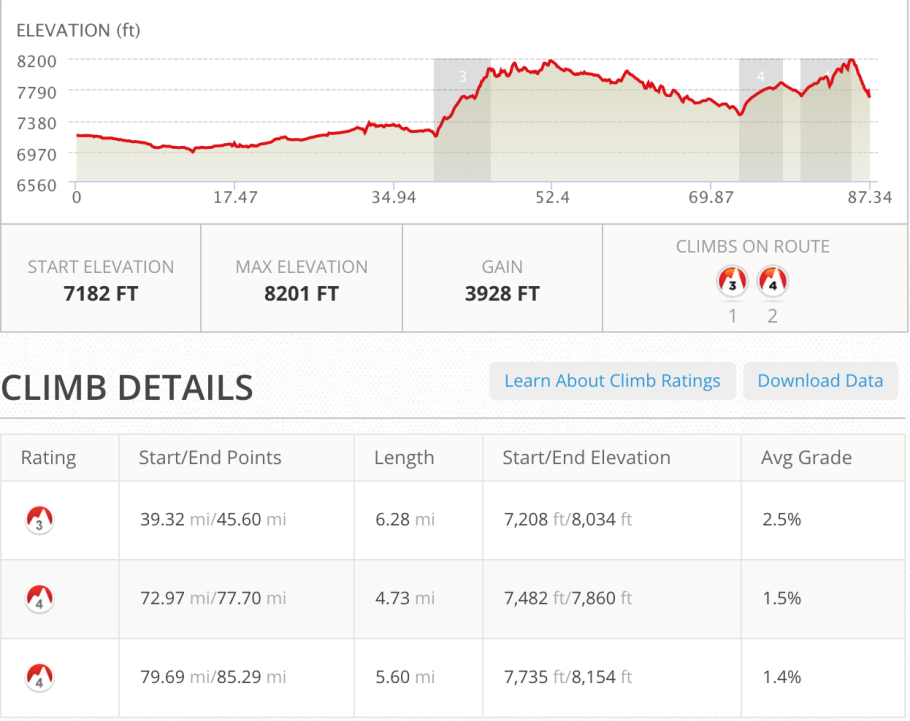
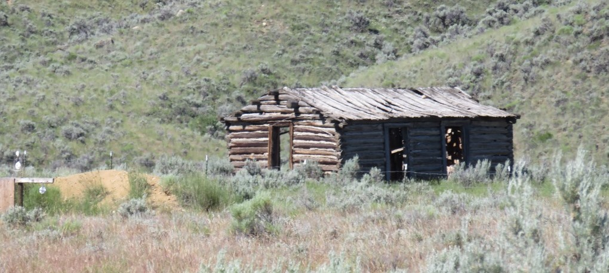
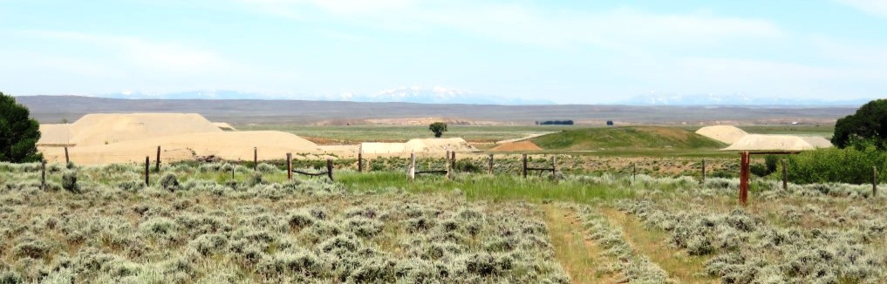
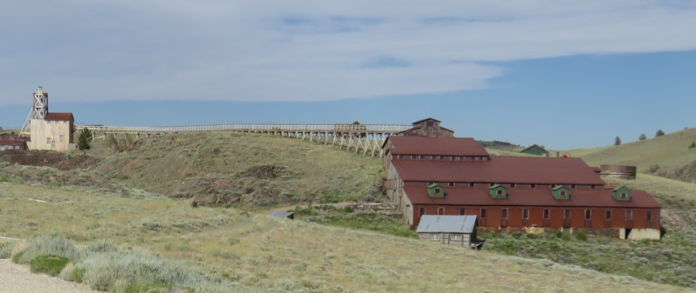
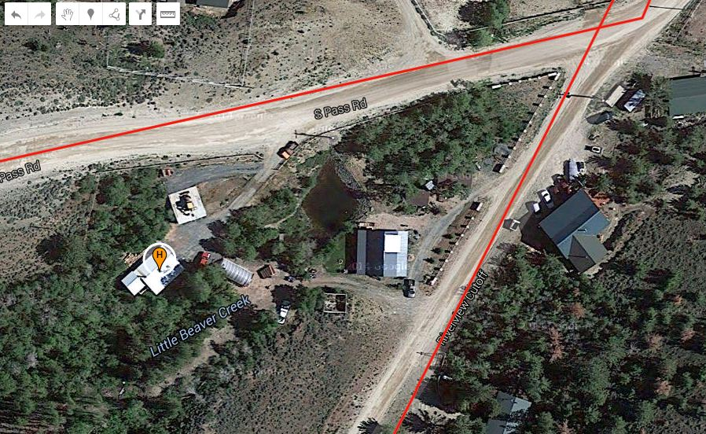

Pinedale to Bolder in the morning
This guy had a nice view of the surrounding RV parkPinedale had been a good stop but I realized in the morning I should have continued on to Bolder. They had full services and the ride was flat to down for eight miles. This would have saved me a bit during the second part of the day when I took the roller coaster from South Pass to Atlantic City.

The first 35 miles of the day were hot but reasonably flat.

House built in the 1840sI was leaving the big mountains for the Wyoming Great Basin.

The Tetons were still off in the distance The Big Sandy River
The Big Sandy River
Beginning of Wyoming Desert
It's all the same but different


Wyoming Desert part 2
Even though these areas look similar I was still happy to be riding through them. It sure beat the walking I had been doing earlier in the month.
Along the road to South Pass City, a restored mining town.

The section of road leading out of South Pass City had this old mine building. I had been told in the town that the ride to Atlantic City was mostly flat.

Just getting to this section had been a steep climb and there would be another 3 or 4 ups and downs until the final down into Atlantic City, WY. A town with about 57 people
 Miners Grub Stake had a lovely host and a nice meal to end the day.
Miners Grub Stake had a lovely host and a nice meal to end the day.
At Miners Grub Stake I got sandwiches for the next day and they called one of the residents who rented their guest house. I took it without seeing it and it turned out to be as nice as any hotel. Mark and Sarah lived in a big house by the road and rented Andrew and I the house in back. Two bedrooms and a living room/kitchen. They did my laundry and brought us snacks for the morning. Beautiful!!!

Off the grid house with 2BR built by the owner.
Saturday, June 27 - ~88 miles - Pinedale to Atlantic City, WY
Text by Jim O'Brien . Photographs by Jim O'BrienTD on Flickr.